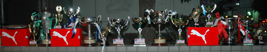
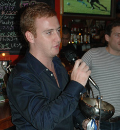
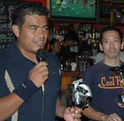
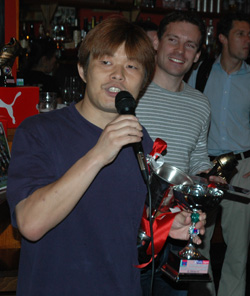
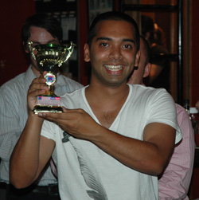
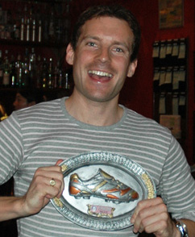

|
YC&AC 1st XI Skipper:
Anthony Savage,
The tougher the competition the sweeter the victory. Let’s hope it doesn’t have to get any sweeter than this in the future. We lost just 1 game all season but still had to beat Hibs in the last game to win the title. They’d already thrashed us in the League and Cup so the manner of the victory was particularly satisfying. I took over the captaincy at Christmas when Dickie Philo broke his foot and I’ve no intention of giving it up again. It’s common knowledge though that the team wouldn’t roll without Joe Takeda; Still 1st choice at the age of 35, though for how long who knows, TML Div 1 is no country for old men. Joe is the reason we were able to field such a consistently strong squad all season and hopefully will stick around long after we put him out to pasture. I’ve listened to some pretty dumb predictions at this party in the past year so won’t be tempted to make any of my own. We do have pretty much the same squad coming back and expect some new blood too so I will say that we expect to be in the hunt again next season. Inittowinit is the way YCAC rolls these days
FC International:
Rouven Woszidlo, Captain:
“The 3rd season of FC International's young existence was indeed an exceptional one. With a record of 17 victories and only one loss we won the second division unchallenged. In TML history there has never been a team to win the division they were promoted to having won the lower division in the previous season. It's a great accomplishment to the team and we deserve to enjoy this moment!
However, have we proved anything yet? The answer is no. We achieved our aim of making it to the 1st Division but if we're honest the journey was more of a ‘walk in the park.’ We only lost one game in the league this season and the real character of this team has yet to be tested when things don't go our way. We lost two games in the Footy Japan Cup, both to 1st Division teams. That speaks for itself. The 1st Division is a different level. It's faster, more technical and physically more demanding. Mistakes aren’t forgiven and if you're not in every game 100% you won't win anything.
We still don't play to our full potential, but for sure we have some great talent in our ranks. I don't really want to highlight anybody, but most people know about Christoph Apke's brilliancy or that Sukui Ono's 30 goals were outstanding, but both players understand know that they couldn't shine without the rest of the team. And that's what FC International is all about. It's not about a certain individual; it's about the team. We are a bunch of great guys who enjoy a good football game in a competitive environment. Fun has and will always be first priority. We are looking forward to the next season and with some young talent joining the team we should be prepared for the challenge.
A big thank you goes to our sponsor, the Tokyo Sports-Café, for a set of sexy uniforms and to Footy Japan for providing us with the TML, such an excellent infrastructure for football!”
El Diego:
Takeshi Inamura, Captain:
“We have very much enjoyed playing this year in TML and meeting lots of new people from different teams. Winning Division 3 was very exciting and we are looking forward to playing in the second division next season. We are thankful to TML for including us in the league and we will do our best next season.”
Panthers:
Romen Barua, Captain:
“The Panthers have progressed as much as I could possibly have imagined in one season. From barely having sufficient numbers at the very start, we developed over the season and seemed to get stronger and stronger finishing as the ‘in form’ team in Div 3, unbeaten in 13 games and winning the final 6 games, including a 5-1 victory against the top team El Diego.
For me it was my first experience as a captain. I tried to get the basics right - firstly to get at least 11 players out to each game - which wasn't always easy playing in Saitama on a Sunday morning. Organisation and spoon-feeding was required at times - putting in early morning calls to repeat offenders (who shall remain nameless) who had one too many at A971. Dealing with expectations and egos was an interesting challenge, which in a way helped us evolve.
Overall we developed a well-balanced squad and 2 or 3 key new players gave us the quality to progress. We kept a consistent system and formation that gave us stability and by the end everyone knew their job. Despite some raised eyebrows at our use of so-called "ringers" (we used them sparingly throughout the year) our final 5 games started with 10 players who were Panthers first and foremost and not registered for another teams.
I, like many other TML captains thought: "If we get our best team out every week we can beat anyone.” This proved to be the case in the run in. However division 2 will be a bigger test and the team is relishing the challenge.
I believe success breeds confidence and desire and by the end of the season this was proven as we had 18 players wanting to play every game. This has prompted the start of a new 2nd team, also sponsored by IFG Asia called the Pumas and our aim is to expand to become recognized as one of the more established TML teams like BFC and Geckoes.”
Peter Swinney:
Operations Manager
Competitions Division
Footy Japan KK
"Memories of entering the company fresh and chirpy at the beginning of last season was certainly a period I won't forget. Introducing myself and formulating relationships with the various captains, becoming familiarised with the general administration of the league as well as a complete change in lifestyle compared to my previous existence in Japan, all contributed to a very hectic autumn. Moments of panic brought on by (to list a few): last minute re-scheduling, a diminishing referee contingent and the sudden responsibility of acting headmaster to our unruly players had me wishing for an early spring! Nevertheless, looking back over the season you cant help but feel satisfied that the players within the league, regardless of their motivation for being there, have competed and revelled in the emotions all of us footy fans seek on a Sunday afternoon in the park. I only hope they are looking forward to next season as much as I am!”
Report by Jon Day
|